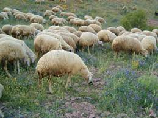

iç anadolu BÖLGESÝ HAYVANCILIK
Ýç Anadoluda Hayvancýlýk ve Besicilik Faaliyetleri
Kurak iklimi, bitki örtüsünün bozkýr olmasý ve düzlüklerin geniþ yer kaplamasý küçükbaþ hayvancýlýðý yaygýnlaþtýrýr. Tiftik keçisinin %78’i bu bölgede beslenir. Toroslarýn Ýç Anadolu’ya bakan yamaçlarýnda yaygýndýr: Özellikle Konya baþta olmak üzere Karaman, Kayseri ve Sivas’ta karaman ýrký koyun beslenir. En çok koyun beslenen bölge olan Ýç Anadolu’da mera hayvancýlýðý yaygýndýr. Kýrsal kesimde ailenin ihtiyaçlarýný karþýlamaya yönelik beslenen büyükbaþ hayvanlarýn sayýsýnda son yýllarda artýþ olmuþtur. Bölgede kümes hayvancýlýðý ile arýcýlýk (Toros yamaçlarýnda) da geliþmiþtir.
